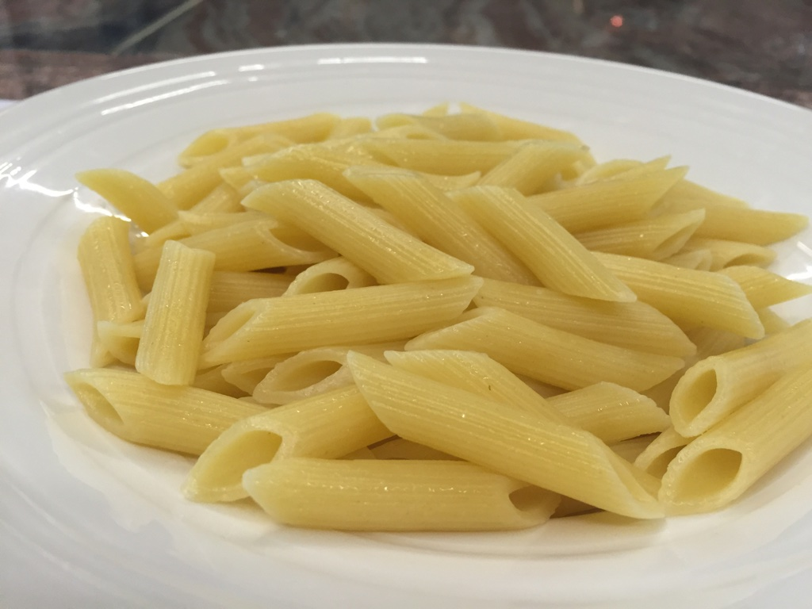

Pasta in bianco

Description
Pasta in bianco ("pasta in white") is an Italian very easy and quick dish to cook.
Ingredients
- Pasta - 100g
- Butter - as needed
- Salt - a couple tbsp
Steps
- Bring to boil a pot of water.
- Put the salt in the water. Then, put the pasta in too.
- Cook for how long is needed (refer to the pasta's package) stirring the pasta every few minutes to prevent it from clumping together.
- Drain the pasta and add the butter, mix until the butter is all melted. This can be done in the now emptied pot if it's easier for you to mix the pasta.